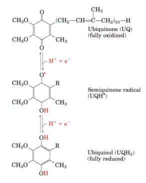
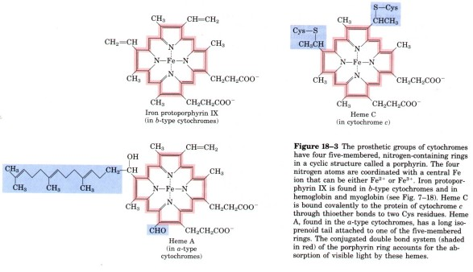
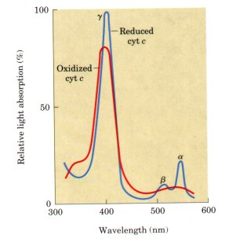
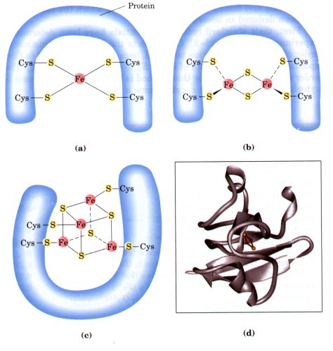

The mitochondrial respiratory chain consists of a series of electron carriers, most of which are integral membrane proteins, with prosthetic groups capable of accepting and donating either one or two electrons. Each component of the chain can accept electrons from the preceding carrier and transfer them to the following one, in a specific sequence. We noted earlier (Chapter 13) that there are four types of electron transfers in biological systems: (1) direct transfer of electrons, as in the reduction of Fe3+ to Fe2+; (2) transfer as a hydrogen atom (H+ + e-); (3) transfer as a hydride ion ( :H- ), which bears two electrons; and (4) direct combination of an organic reductant with oxygen. Each of the first three types occurs in the respiratory chain. Some of the reactions in this sequence are one-electron transfers, and others involve the transfer of pairs of electrons. Whatever the form, the term reducing equivalent is used to designate a single electron equivalent that is transferred in an oxidation-reduction reaction.
In addition to NAD and the flavoproteins described above, three other types of electron-carrying groups function in the respiratory chain: a hydrophobic benzoquinone (ubiquinone) and two different types of iron-containing proteins (cytochromes and iron-sulfur proteins).
| Ubiquinone (also called
coenzyme Q, or simply UQ) is a
fatsoluble benzoquinone with a very long isoprenoid side
chain (Fig. 182). The closely related compounds
plastoquinone (found in plant chloroplasts) and
menaquinone (found in bacteria) play roles analogous to
that of ubiquinone; all carry electrons in
membrane-associated electron transfer chains. Ubiquinone
can accept one electron to become the semiquinone radical
(UQH•) or two electrons to form ubiquinol (UQH2) (Fig.
18-2) and, like flavoprotein carriers, it is therefore
able to act at the junction between a two-electron donor
and a one-electron acceptor. Because ubiquinone is both
small and hydrophobic, it is freely diffusible within the
lipid bilayer of the inner mitochondrial membrane, and
can shuttle reducing equivalents between other, less
mobile, electron carriers in the membrane. The cytochromes are iron-containing electron transfer proteins of the mitochondrial inner membrane, the thylakoid membranes of chloroplasts, and the plasma membrane of bacteria. The characteristic strong colors of cytochromes are produced by the heme prosthetic group (Fig. 18-3). |
 Figure 18-2 Ubiquinone (UQ, or coenzyme Q), a respiratory chain electron carrier. Complete reduction of ubiquinone requires two electrons and two protons, and occurs in two steps through the semiquinone radical intermediate. The same chemistry is involved in the reduction of plastoquinone (a photosynthetic electron carrier) in chloroplasts and menaquinone (a respiratory chain carrier) in bacteria. |
There are three classes of cytochromes distinguished by differences in their light-absorption spectra and designated a, b, and c. Each type of cytochrome in its reduced (Fe2+) state has three absorption bands in the visible range (Fig. 18-4). The longest-wavelength band (the a band) is near 600 nm in type a cytochromes, near 560 nm in type b, and near 550 in type c. To distinguish among closely related cytochromes of one type, their exact absorption maximum is sometimes used in their names, as in cytochrome b562 (the three-dimensional structure of this protein was shown in Fig. 7-25).

Figure 18-3 The prosthetic groups of cytochromes have four five-membered, nitrogen-containing rings in a cyclic structure called a porphyrin. The four nitrogen atoms are coordinated with a central Fe ion that can be either Fe2+ or Fe3+. Iron protoporphyrin IX is found in b-type cytochromes and in hemoglobin and myoglobin (see Fig. 7-18). Heme C is bound covalently to the protein of cytochrome c through thioether bonds to two Cys residues. Heme A, found in the a-type cytochromes, has a long isoprenoid tail attached to one of the five-membered rings. The conjugated double bond system (shaded in red) of the porphyrin ring accounts for the absorption of visible light by these hemes.
| The heme groups of a and b cytochromes are tightly, but not covalently, bound to their associated proteins; heme groups of c-type cytochromes are covalently attached (through Cys residues; Fig. 18-3). As with the flavoproteins, the standard reduction potential of the iron atom in the heme of a cytochrome depends heavily on its interaction with protein side chains and is therefore different for each cytochrome. The cytochromes of type a and b and some of type c are integ'ral membrane proteins. One striking exception is cytochrome c of mitochondria, a soluble protein that associates through electrostatic interactions with the outer surface of the mitochondrial inner membrane. |  Figure 18-4 Absorption spectra of cytochrome c in its oxidized (red) and reduced (blue) forms. Also labeled are the characteristic a, /3, and y bands of the reduced form. |
The ubiquitous occurrence of cytochrome c in aerobic organisms, together with its small size (104 amino acid residues), has allowed the determination of its amino acid sequence in many species from every phylum. The degree of sequence similarity in cytochrome c has been used as a measure of the evolutionary distances that separate species (see Fig. 6-16).
In some iron-containing electron transfer proteins, the ironsulfur proteins, the iron is present not in heme (as it is in cytochromes) but in association with inorganic sulfur atoms and/or the sulfur atoms of Cys residues in the protein. These iron-sulfur (Fe-S) centers range from simple structures with a single Fe atom coordinated to four Cys residues through the sulfur in their side chains to more complex Fe-S centers with two or four Fe atoms (Fig. 18-5).
 These proteins all participate in one-electron transfers, in which one of the Fe atoms is oxidized or reduced. With some exceptions, iron-sulfur proteins have low standard reduction potentials-they are good electron donors. |
Figure 18-5 The Fe-S centers of iron-sulfur proteins may be as simple as in (a), with a single Fe ion surrounded by S atoms of four Cys residues. Other centers include both inorganic and Cys S atoms, as in the 2Fe-2S (b) or 4Fe-4S centers (c). The ferredoxin in (d), from the cyanobacterium Anabaena 7120, has one 2Fe-2S center. (Note that only the inorganic S atoms are counted in these designations. For example, in the 2Fe-2S center (b), each Fe ion is actually surrounded by four S atoms.) The exact standard reduction potential of the iron in these centers depends on the type of center and the details of its interaction with its associated protein. |
Many of the iron-sulfur proteins absorb visible light in the region of 400 to 460 nm, and in this region absorption decreases by about 50% when the proteins are reduced. Although the visible absorption spectrum can be used as a measure of oxidation state for purified proteins, this is not possible in more complex systems such as mitochondrial membranes, where the absorption is masked by the many other pigments present. However, the Fe atom(s) in iron-sulfur proteins are paramagnetic (i.e., they possess electrons with unpaired spins) and can therefore be detected by electron paramagnetic resonance (epr) spectroscopy. The epr signal, which is only observable at temperatures well below 0°C, is the best measure of the presence, and the oxidation state, of a given iron-sulfur protein. The difficulty of detecting and identifying iron-sulfur proteins at room temperature has seriously complicated studies of their function in electron transfer, but it is clear that a number of iron-sulfur proteins play crucial roles in mitochondria (and chloroplasts).